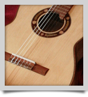
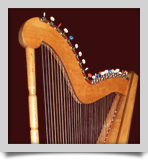
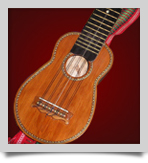
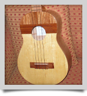

 Tapas: de Pino Oregón Canadiense, Canelo, Marupa, Álamo, Alerce.
Fajas y Fondo: Cedro Canadiense, Ciruelillo, Palo Maria, Tenío, Alerce.
Brazo: Cedro Canadiense, Ciruelillo, con alma de Paquio.
Diapasón: Paquio, Luma.
Paleta: Ciruelillo, Cedro Canadiense, con enchapado.
Puente: Paquio, Luma.
Cejilos: del Puente y del Braso de hueso.
Tapas: de Mañio.
Caja: de Mañio.
Bordes: de Alerce.
Pedestal, o Capitel: de ciruelillo.
Consola, o Porta clavija: Ulmo, Ciruelillo.
Cuerpo: Ciruelillo, Caoba.
Tapa: Pino Oregón, Alerce.
Brazo: Ciruelillo, Caoba.
Paleta: Ciruelillo, Caoba. Enchapado.
Diapazón: Paquio, Luma.
Puente: Luma, Paquio.
Tapa: Pino Oregón Canadiense, Mañio.
Faja y Fondo: Cedro.
Brazo: Cedro.
Paleta: Cedro.